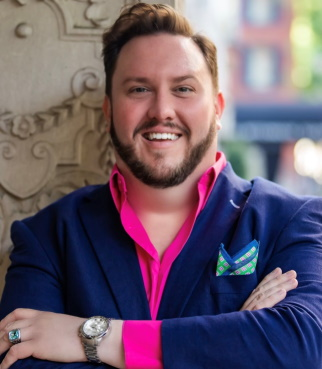
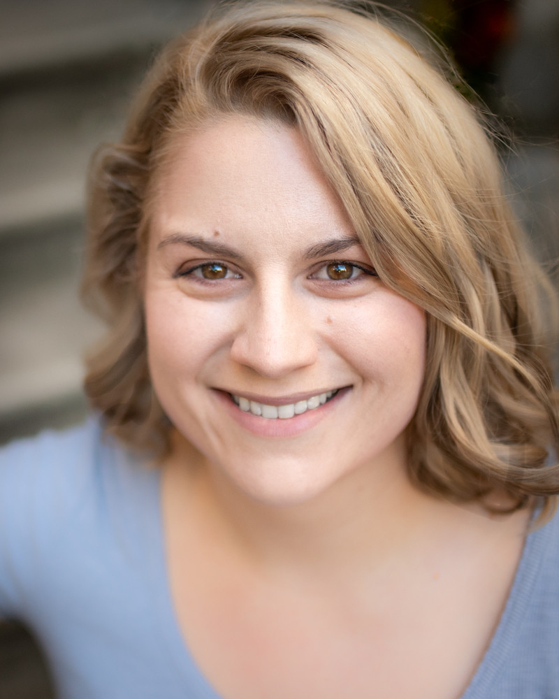

Production Team Members

Ryan Colbert (Artistic Director) has been praised for “rendering text with a touching tenderness” (Berkshire Fine Arts) and making "a feast of quirky dramatic contrasts...while smoothing it with a velvety vocal line” (ArtsKnoxville). This season, she will sing Frasquita (Carmen) with Bella Diva Productions and again with the Orchestra Society of Philadelphia, cover Mother and the Witch (Hansel and Gretel) with Wilmington Concert Opera, Mother and Witch (Hansel und Gretel) with OOT Philadelphia, and Melisande (Pelleas et Melisande) with Amici Opera. Recent engagements include Nile in the world premiere of J Marchand Knight's "Cleopatra Built" and Tatyana cover (Eugene Onegin) with Opera Queens, Mimi (La boheme) and Nella (Gianni Schicchi) with Moon River Opera, Rosie in the world premiere of Frank Pesci's Royal Flush with Marble City Opera, and Alice Ford (Falstaff) with the International Summer Opera Festival of Morelia. She currently serves as Artistic Director of Delaware Valley Opera Company and Co-manager of Opera on Tap's Philadelphia chapter.

Mark Horwedel (Chorus Recruiter) has recruited the chorus for the past 3 years. He is performing his sixteenth season with DVOC, having done Land of Smiles, Gianni Schicchi, Elixir of Love, La Rondine, Merry Widow, Don Pasquale, Carmen, La Forza, Rigoletto, Aida, and Amahl and the Night Visitors, as well as several concerts with them in previous seasons. He has also performed with Opera Delaware, Center City Opera Company, and Concert Opera of Pennsylvania in repertoire including Romeo and Juliette, Daughter of the Regiment, Dido and Aeneas, and La Sonnambula. Mark’s Broadway-style credits include My Fair Lady, Once Upon a Mattress, South Pacific, Fiddler on the Roof, and Oliver! Mark is also active in Liturgical music, having served as the Bass section lead and a cantor in Saint David’s parish, and as the Tenor/Bass section lead in Joyful Song, a choir that does special event performances for the Archdiocese of Philadelphia..

Connie Koppe (Costume Designer) is pleased to add the new children’s opera Liebovar to the list of operas she has directed for The Delaware Valley Opera Company. Directing seemed to be a natural next step for singer and arts educator, Connie Koppe, who began directing for DVOC in 1997 with a production of The Merry Widow. Connie got her directing training from 14 years of watching professional directors while singing with the Opera Company of Philadelphia chorus and The Pennsylvania Opera Theater. For DVOC she has also directed Carmen, The Barber of Seville, The Marriage of Figaro, The Magic Flute, Cenerentola, Don Giovanni, Il Tabarro and Amahl and the Night Visitors. For several years, she was the Stage Director for the Philadelphia Christmas Revels and she directed a production of The Pirates of Penzance for the Philadelphia Biblical University’s opera workshop and Don Giovanni for Opera Libera. Connie holds a BS in Music Education and a Master of Music in Vocal Performance.

Josh Miller (Music Director - The Medium) BIO.

Caroline Pashos (Chorus Coordinator) is thrilled to return for her fourth season with the Delaware Valley Opera Company. This season marks her debut as both an Assistant Director and a Stage Manager for the July production of Il matrimonio segreto. She also takes the stage as a member of the DVOC Chorus for the 2024 Summer Opera Festival in Le nozze di Figaro. Her DVOC debut occurred in 2019 as part of the chorus for their production of La rondine. Other performances include Carmen, The Merry Widow, Dialogues of the Carmelites, Les contes d’Hoffmann, Susannah, Cavalleria rusticana/I Pagliacci, and Amahl and the Night Visitors. She also appeared in the premieres of Liebovar and Take My Otherness. A native of suburban Philadelphia, she graduated in 2017 from Temple University with a Bachelor of Arts in Theatre. Her interests outside of theatre include astronomy, baseball, motorsport, nature, and soccer. She would like to thank her family for all their incredible support.

Ali Rohrbaugh (Production Manager) is a multi-media production manager and performer based in Philadelphia, with a focus on live performance, video marketing, and new work development. Previous credits include: Philly Children’s Theatre’s ‘Braving the River: A Sensory Play’ (Stage Manager), ‘Jump-Spin-Move! A Theatre For the Very Young Show,’ and ‘Season’s Magical Adventure,’ attending the Edinburgh Fringe Festival with The Los Angeles Theatre Initiative’s 2022 ‘Too Much Light…’ (Business & Marketing Director), Fish Project Play Festival and Red Door Play Festival (Festival Coordinator). Upcoming projects: ‘Light Year Away,’ with Philly Children's Theatre in collaboration with the Please Touch Museum, and returning to Edinburgh Fringe 2025 as a Lead Producer with the Los Angeles Theatre Initiative. Education: Muhlenberg College 2022, Theatre and Business Administration majors..

Kaitlyn Tierney (Director - Dido and Aeneas) Director Kaitlyn Tierney maintains an active musical career as a teacher, performer and director, and has maintained vocal studios at the University of Delaware, Rowan University, and Temple University as well as her own private studio in Philadelphia. Dr. Tierney has approached a wide variety of musical genres both as a director and performer.

Recent credits include assistant directing a production of Massenet’s Cendrillon with Cedar Rapids Opera in Iowa, and performing Alice Beineke in Andrew Lippa’s musical rendition of The Addams Family. Other directing credits include John Mclure's Laundry and Bourbon, Shakespeare's Measure for Measure, and Yazmina Reza's God of Carnage.
Dr. Tierney completed her Bachelor of Music at New England Conservatory, in a dual program of Vocal Performance and Music Theory, her Master of Music at the University of Delaware in and her Doctorate of Music at Temple University.
John Walthausen (Music Director - Dido and Aeneas)

Vakhtang Zaalishvili (Music Director - Il Barbiere Di Sivigila) is a pianist and collaborative pianist-opera coach. Vakhtang's achievements extend to his participation in competitions, festivals, and opera productions, earning laureates and diplomas in events such as the Future Star 8th republic competition/festival – laureate and diploma “The Best Performing Skills” (Tbilisi, Georgia, 2015), "Music Without Limits XVI International Competition" – I place in category D (Druskininkai, Lithuania, 2016), 7th International Moritz Moskowski Piano Competition – Laureate Diploma (Kielce, Poland, 2017), 2nd National Melito Balanchivadze Piano Competition – Laureate and III place (Kutaisi, Georgia 2018). The Gradus piano Festival – (Denmark, Aarhus 2018), Notable highlights as an opera coach include the production opera "Falstaff" at Conservatorio di Musica Arrigo Boito in Italy (2022), and productions such as "Le Nozze Di Figaro" (2023) and "Dido and Aeneas" (2023) in Tbilisi, Georgia. He is delighted to make his company debut with DVOC this season.